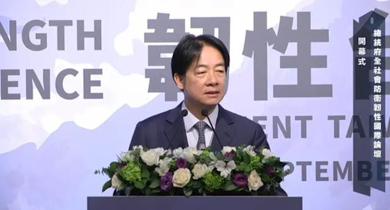

世界苦茶09月21日新闻 | 41条 | 於朦朧案引發網絡巨大輿情

於朦朧案引發網絡巨大輿情 | 賴清德稱戰敗投降都是假消息 | 中國繼續加購巴西大豆 | 特朗普逼迫阿富汗歸還基地 | 法官駁回特朗普《紐約時報》誹謗案 | 美國H1B簽證政策一天反轉
苦茶数据
美元兑人民币：7.10（昨日7.11，前日7.11）
美元兑日元：147.90（昨日147.56，前日147.36）
上证指数：休市（昨日3820，前日3828）
标普500指数：休市（昨日6664，前日6631）
比特币：115700（昨日115553，前日116839）
布伦特原油：66.68（昨日67.31，前日67.70）
中国新闻
• 蔡国强高原烟花遭查 ：艺术家蔡国强联合户外品牌始祖鸟在西藏喜马拉雅山脉燃放艺术烟花引起争议，当地已成立调查组。西藏“云端珠峰”微信公众号星期天凌晨发布情况通报称，9月20日，《蔡国强：升龙》烟花秀视频在网络发布后，引发网民关注。通报称，中共日喀则市委、市政府高度重视，已成立调查组第一时间赶赴现场核查，后续将根据核查结果依法依规处理。
• 港办中—东盟检察长会 ：香港将于下周主办中国亚细安成员国总检察长会议，聚焦打击金融和网络犯罪议题。香港律政司司长林定国星期六在脸书发文称，第15届中国—亚细安成员国总检察长会议将于9月22日至24日在香港举行。他说，作为最高检察机关年度重要交流平台，会议按惯例由成员国轮流主办。时隔10年，中国大陆再次承办并由中央政府授权香港举办这项会议。
• 网信办整治热搜炒星 ：中国网信部门约谈社交媒体平台微博和快手，原因是平台的热搜榜单主榜大量炒作明星动态，破坏网络生态。中国国家互联网信息办公室星期六在官方微信公众号发布两则公告，分别有关微博和快手。其中一则显示，针对微博平台未落实信息内容管理主体责任，在热搜榜单主榜高位呈现大量炒作明星个人动态和琐事类词条等不良信息内容，破坏网络生态的问题，网信办指导北京市网信办，对微博平台采取约谈、责令限期改正、警告、从严处理责任人等处置处罚措施。
• 临沂法院错罚致歉纠正 ：中国山东省临沂市一农妇因不服丈夫案件的判决，指责法官“没良心”，被罚款10万元人民币并拘留15天，引起舆论质疑处罚过重。当地法院通报，事件中的适用法律错误，向当事人道歉并退还罚款，并追究相关人士责任。据“临沂经开法院”微信公众号消息，临沂经济技术开发区法院星期五发布情况通报称，法院针对网帖反映“山东临沂一法院作出十万元罚款，适用法律错误”事件启动核查工作。经审查，在对杨姓女子处以拘留处罚决定的同时，又对她作出罚款的处罚决定，不符合《中华人民共和国刑事诉讼法》规定，适用法律错误，须予以纠正。
• 中方向日在华企释判决 ：日本制药公司安斯泰来一名日籍员工被控间谍罪、在华被判三年六个月有期徒刑后，日本媒体报道，中国商务部召集在华日企高管等人士，说明判决理由。日本共同社星期五引述消息人士报道，中国商务部在说明中指出，涉事员工受日本情报机构委托开展调查，并获得报酬。分析指出，中国此举意在强调，只要从事正常商业活动，就不会有问题。相关人士说，以往日本人被控间谍罪的案件中，中方从未作出类似说明。
• 中国驻菲大使黄溪连离任 ：中菲关系因南中国海主权纠纷持续陷入紧张之际，中国驻菲律宾大使黄溪连即将离任。据中国驻菲律宾大使馆网站消息，黄溪连星期五辞行拜会菲律宾外长拉扎罗。根据新闻稿，黄溪连感谢拉扎罗和菲外交部对他履职给予的支持和帮助，赞赏菲外交部在拉扎罗带领下发挥的建设性作用，并希望中菲关系在双方共同努力下早日重回正轨。
• 中企高管芬太尼案获25年 ：一名中国企业高管因贩运用于制造芬太尼的化学品，在美国被判处25年监禁。美国司法部星期五在官网发布声明称，今年2月，总部位于武汉的精奥生物科技公司高管王庆洲与市场经理陈依依在纽约被裁定非法进口芬太尼前体化学品及洗钱罪名成立。联邦地区法官加德皮星期五判处王庆洲25年监禁。陈依依则已于8月22日被判处15年监禁。
• 武大性骚扰案二审维持 ：武汉大学两年前的一起图书馆性骚扰案，在法院宣判涉事男生不构成性骚扰后，女生杨景媛不服判决，提起上诉。最新判决结果显示，杨景媛上诉被驳回。武汉市中级人民法院官网星期六发布情况通报，湖北省武汉经济技术开发区人民法院对杨景媛诉肖明瑫性骚扰损害责任纠纷一案，于今年7月25日作出一审判决，驳回杨景媛的全部诉讼请求。杨景媛不服该判决，向本院提起上诉。法院经不公开开庭审理后认为，一审判决认定事实清楚，适用法律正确，应予维持。法院作出二审判决：驳回上诉，维持原判。
• 释永信案多名关系人被查 ：中国古刹少林寺前住持释永信涉嫌刑事犯罪、挪用侵占项目资金寺院资产一案，中国媒体报道最新进展称，多名与释永信关系密切的当地人士被带走协助调查，相关部门据报也在侦查释永信的两起刑事案件及多名私生子女一事。据深圳新闻网报道，释永信的直系亲属，赵姓女士，此前通过河南登封市一牛姓官员的运作，成为登封市某部门的办公室主任。近日，二人已在接受调查。报道称，在协助调查的名单里，还包括少林寺核心企业负责人三人，以及少林酒店原负责人李某、当地建筑商崔某某、少林药局原负责人某原、客堂某秧等人，他们都是释永信商业团队的重要成员。
亚太印太新闻
• 国民党主席选六人过审 ：台湾在野国民党主席选举进行参选资格审查及号次抽签，登记的六位参选人均通过资格审查，国民党中央选监委员会召集人连胜文呼吁候选人在竞选中互相尊重，维持国民党形象。国民党主席选举星期五领表登记截止，国民党前立委郑丽文、立委罗智强、彰化县前县长卓伯源、台北市前市长郝龙斌、孙文学校总校长张亚中和前国大代表蔡志弘六人登记参选。综合台湾联合报、ETtoday新闻云报道，国民党星期六在中央党部举行中央选举监察委员会会议，与会委员推举国民党副主席连胜文担任召集人。会中确认登记参选的六人都符合参选资格，随即进行候选人号次抽签。
• 国民党首辩三人到场 ：台湾在野的国民党主席选举下月举行，台湾中天新闻举办辩论会，但候选六人，仅有三人到场辩论。综合台湾中天新闻和《自由时报》报道，国民党主席选举将在10月18日举行，中时媒体集团在候选人名单中邀请前四强，举办“国民党主席大辩论”系列。《中天新闻》星期六主办首场辩论会，本邀请参选人罗智强、郑丽文、张亚中和郝龙斌参与。不过，郝龙斌称“当初没有答应”，并以行程冲突为由，未出席辩论会。只有罗智强、郑丽文、张亚中同台辩论。
• 赖清德称，战败投降皆假 ：台湾总统赖清德说，若台湾遭受军事侵略，任何有关战败或投降的消息都是假信息，并强调这就是台湾的立场，也是捍卫自由民主、永续台湾的决心。据台湾总统府新闻稿，赖清德星期六出席“总统府全社会防卫韧性国际论坛－韧性台湾 民主永续”开幕式时点出，台湾与世界两大挑战，一方面是极端气候带来的灾害，另一方面是以中国大陆为首的威权体系正强化联盟，对民主社会进行渗透与破坏。“我们必需积极行动，加速整备。”他说，总统府成立“全社会防卫韧性委员会”一年以来，五大工作主轴已转化成具体行动，从桌上兵推到实地操演；也首次将防灾与防卫结合，在汉光军演期间同步举办各县市“城镇韧性演习”。
• 大马拟禁电子烟遭反对 ：马来西亚政府提出在全国禁止开放式电子烟的提议，以及全国电子烟禁令计划，三大电子烟协会强烈反对。这三个协会分别是马来西亚零售电子烟协会、巫裔电子烟贸易商协会以及马来西亚电子烟及替代烟草协会。《中国报》引述他们星期五发表的联合文告说，此举将影响在2024年10月1日生效的2024年公共卫生烟草与吸烟管制法令。
• 大马多民众挺14岁限社媒 ：多数马来西亚民众赞同14岁以下儿童不应使用社交媒体，但在是否全面禁止学生在学校使用智能手机一事上，意见则出现分歧。根据益普索《2025年马来西亚教育观察》的调查结果，十个马国人当中有七个支持限制14岁以下儿童使用社交媒体的提案。调查于今年6月20日至7月4日之间进行，结果显示，全球有71%的受访者，以及马国有72%受访者认为，社交媒体影响了孩子的教育，因而应该加以限制。
• 台称赴陆失联等188例 ：台湾陆委会披露，自去年1月1日至今年8月31日，共有188名前往中国大陆的台湾民众失联、被留置盘查，或疑似遭限制人身自由，相当于平均每月发生九起案例。陆委会星期四在脸书发文指出，其中失联50人、被留置盘查19人、疑似受限自由119人。陆委会还透露，近日甚至发生台湾旅客赴陆旅游时被海关无故盘查，最后竟因“抓错人”才获释的离谱事件。
科技新闻
• 甲骨文与Meta洽200亿云单 ：甲骨文正在与Meta Platforms商谈一笔约200亿美元的云计算合作。彭博社引述知情人士称，根据这项多年期协议，甲骨文将为Meta提供训练和部署人工智能模型所需的计算能力。知情人士称，交易总金额可能上调，具体条款在最终协议签署前仍可能调整。
• xAI估值达2000亿美元 ：马斯克的人工智能初创公司xAI完成新一轮融资，估值达到2000亿美元，成为全球价值最高的初创公司之一。彭博社引述知情人士称，这轮融资超过100亿美元，投资方包括Valor Capital、卡塔尔投资局以及通过王国控股公司参与投资的沙特阿拉伯王子阿尔·瓦利德·本·塔拉勒。另一位知情人士表示，作为本轮融资的一部分，xAI还计划通过债务融资筹集35亿美元，用于数据中心扩建。债务融资的规模仍在最终确定中。
财经新闻
• 特朗普总统阻止美国钢铁公司工厂停产计划： 美国钢铁公司两周前通知伊利诺伊州格拉尼特城的工人，该厂的运营将于11月停止。这家由日本制铁控股的公司表示，将继续向该工厂近 800名员工支付工资，即使他们不从事常规生产工作。知情人士称，商务部长卢特尼克听闻了该计划，并致电美国钢铁公司首席执行官戴夫·伯里特。卢特尼克告诉伯里特，本届政府不会允许工厂停止运营，总统将就工厂运营事项动用其所谓的 “黄金股” 权力。今年六月份，在日本制铁签署了一份国家安全协议后，美国政府批准了日本制铁以 141 亿美元收购美国钢铁公司的交易。美国钢铁公司周五表示已推翻先前的计划，格拉尼特城的工厂将继续把钢坯轧制成钢板。
• 小米空调十年包修 ：中国消费电子产品巨企小米集团总裁卢伟冰在社媒宣布，小米推出空调10年免费包修服务。中国家电巨企格力电器市场总监朱磊则回应称，10年不用修才是实力。卢伟冰星期五在个人微博账号发文宣布，小米当天正式推出“米家空调10年免费包修”服务，用户无需花一分钱。他称，柜机、挂机、中央空调全品类统统覆盖，中央空调使用周期长、维修难度大，用户更需要10年包修。小米做服务不把成本转嫁给用户，10年包修实打实降低用户长期使用成本。
• 中粮购澳54万吨油菜籽 ：消息人士称，中国央企中粮集团向澳大利亚采购了九艘货船、总计54万吨的油菜籽。中国此举适逢北京上月以反倾销为由向加拿大油菜籽征收临时关税。路透社星期五引述三名贸易消息人士，报道上述消息。中粮集团这笔交易约等于中国去年油菜籽进口总量的8%。中国商务部8月12日公告，称调查机关初步认定，原产于加拿大的进口油菜籽存在倾销，将从8月14日起向加拿大油菜籽加征75.8%的保证金，作为临时反倾销措施。
• 绿地执行总裁陈军辞任 ：中国绿地控股集团有限公司执行总裁陈军因个人原因辞任。此前有报道称，他今年5月下旬后失联。综合澎湃新闻和《21世纪经济报道》报道，绿地控股集团股份有限公司董事会星期五发布关于任免公司高级管理人员的公告，绿地控股第11届董事会第三次会议于当天以通讯方式召开。会议审议通过《关于任免公司高级管理人员的议案》。根据议案，绿地控股同意聘请陆新畬、吴晓晖、任虎、薛明辉、姜威担任公司副总裁，任期与本届董事会一致。陈军因个人原因辞去公司执行总裁职务，也不再担任公司其他职务。
• 在美中企操纵案激增 ：美国联邦调查局数据显示，涉及在美上市小型中国公司的市场操纵案件，今年至今比去年同期增加了三倍，当中许多案件都是由人工智能机器人散播虚假信息，人为抄高股价再抛售。《日经亚洲》星期六报道，这类典型“拉高出货”的设局，尤其在中企特别猖獗。纳斯达克股市数据显示，自2022年以来，涉嫌操纵股价而向美国金融业监管局和证券交易委员会呈报的案件，约70%涉及中资企业。网络安全股市KnowBe4首席信息安全执行长格兰姆斯认为，当七成涉案企业都是中资，显示背后有团伙在协调操作。
• 德勤促越南下调个税 ：德勤越南发表报告指出，越南最高个人所得税率35%在东南亚位居前列，呼吁越南政府进行改革以吸引人才。据网媒“越南快讯”报道，越南的最高个人所得税率与泰国和菲律宾差一样，远高于新加坡的24%，马来西亚和缅甸的30%。越南财政部最近提出《个人所得税法》修订方案，计划将现行七个税级减至五个，但维持35%的最高边际税率。财政部计划将适用这一税率的收入门槛从每月8000万越南盾提高至1亿越南盾。
• 深圳辟谣放开限购 ：针对网传“深圳核心区放开限购”的消息，深圳官方辟谣，呼吁不要轻信非官方渠道的虚假消息。深圳网络辟谣官方平台、深圳新闻网运营的微信公众号“深圳网络辟谣”发文称，有关“深圳核心区放开限购”内容的微信聊天截图星期五在网上流传，称“各项目如果有客户是因为购房资格限制不能买房的，可以申请特殊渠道解决”，引发关注。深圳网络辟谣称，经核实，深圳市今年9月5日出台了房地产调控政策，并不存在网传的“深圳核心区放开限购”的情况，请勿轻信非官方渠道的虚假消息。
• 中国美债持仓创新低 ：中国2025年以来第四次减持美债，持仓再创新低。美国当地时间星期四公布的7月国际资本流动报告显示，中国当月减持257亿美元美国国债，持仓规模降至7307亿美元，创2009年以来新低。日本7月增持美债至1.15万亿美元，仍保持是美国国债最大的海外持有国。这是中国2025年以来第四次减持美债，从2022年4月起，中国大陆的美债持仓一直低于1万亿美元。中国财经媒体华尔街称，鉴于中美关系变化和外储资产配置多元化的趋势，中国的美国国债持仓仍可能稳步下降。未来中国持仓的波动很大程度上仍受中美关系影响。
• 稀土磁体出口创七个月高 ：中国8月稀土磁体出口连续第三个月大幅增长，创下七个月新高，表明中国政府放开限制稀土出口后，这种电动汽车关键矿物的出口量正在稳步回升。据路透社，中国8月稀土磁体出口量环比增长10.2%，达到6146吨，同比增长15.4%。此次出口增长是在北京欧美达成一系列协议之后。然而，按国家地区划分，中国对美国的出口量为590吨，环比下降4.7%，同比去年8月下降11.8%。彭博社基于中国政府数据的计算显示，包括高性能磁体在内的稀土产品8月份出口量升至7338吨，创下2012年初有数据以来月度最高纪录。
• 中国增购巴西大豆 ：随着买家提前备货以防第四季度供应中断，中国8月从巴西进口的大豆同比增长2.4%。据路透社报道，中国海关总署公布的数据显示，中国8月从巴西进口的大豆达1049万吨，占大豆总进口量的85.4%。8月是继5月、6月和7月之后，中国大豆进口量再创同期历史新高。数据还显示，中国当月从美国进口的大豆达22.7万吨，同比增长12.3%。
俄乌战争
• 泽连斯基将会特朗普 ：乌克兰总统泽连斯基星期六说，他将在下周联合国大会期间与美国总统特朗普会面。与此同时，他透露，俄罗斯对乌克兰的攻势越来越猛。泽连斯基说，他与特朗普会面时，将讨论乌克兰的安全保障以及对俄罗斯的制裁。泽连斯基也说，俄罗斯连夜发动大规模的空袭，向乌克兰发射了40枚导弹和约580架无人机，造成至少三人死亡，数十人受伤。
• 欧盟或限友谊管道俄油 ：消息人士透露，欧盟正考虑对仅存的俄罗斯石油进口采取贸易措施，以迎合美国总统特朗普提出的要求。彭博社星期六报道，欧盟委员会正在评估经由友谊输油管运到匈牙利和斯洛伐克的俄罗斯石油进口。这两个欧盟成员国至今不愿从俄罗斯石油转往其他来源，以这将危及它们的能源安全，阻止欧盟采取措施。这项评估与欧盟在星期五提出的新一轮制裁配套无关。根据星期五提呈的配套，欧盟建议的新制裁包括禁止购买俄罗斯的液化天然气，将在制裁生效后的六个月内禁止购买短期合同，截至在2027年1月1日开始禁止长期合同。
• 爱沙再指俄机侵空求磋商 ：爱沙尼亚指责俄罗斯战机9月19日侵犯其领空，俄罗斯否认。爱沙尼亚外交部称，3架俄罗斯米格-31型战斗机未经许可进入爱沙尼亚领空，停留长达12分钟。外交部19日召见俄罗斯驻爱沙尼亚临时代办，就俄战机“侵犯爱沙尼亚领空的行为”表示抗议并递交照会。北约发言人哈特证实，北约已紧急出动战机拦截进入爱沙尼亚领空的俄战机。爱沙尼亚已请求北约启动《北大西洋公约》第四条进行磋商，北大西洋理事会将在下周早些时候开会具体讨论这一事件。俄罗斯国防部说，这些战机的飞行路线穿过波罗的海中立水域上空，与爱沙尼亚瓦因德洛岛的距离超过3公里，未侵犯爱沙尼亚领空。欧洲理事会主席科斯塔称，俄方此举是“不可接受的挑衅”，“此事再次凸显欧洲亟需强化东部防线、深化防务合作并加大对俄施压”。特朗普表示，他尚未就此事听取简报，预计稍后听取。特朗普说：“我不喜欢这样，我不喜欢这种情况发生。可能会有大麻烦，稍后我会告诉你们。”
• 在最近一系列神秘死亡事件中，又有一位俄罗斯顶级商人被发现死亡： 周四，隶属于俄罗斯国家核能巨头俄罗斯原子能公司的一家碳纤维和复合材料公司的首席执行官亚历山大·秋宁被发现死在莫斯科地区的汽车旁。与克里姆林宫关系密切的塔斯社援引当地政府的报道称，尸体是在莫斯科西部科科什基诺定居点附近的一条道路上发现的。在附近发现了一支猎枪和一张提到长期抑郁症的纸条。当局表示，他们正在将此案视为疑似自杀案件。
• 五角大楼警告欧洲外交官，将削减对波罗的海国家的援助： 五角大楼官员会见了一批欧洲外交官，并警告将削减对波罗的海国家的援助。路透社援引匿名知情人士的话报道了此事。此次会晤于8月底举行。美国国防部官员表示，他们计划切断对与俄罗斯接壤的拉脱维亚、立陶宛和爱沙尼亚的部分安全援助。据一位直接了解相关言论的官员透露，五角大楼发言人戴维·贝克告诉这些外交官，欧洲应该减少对美国的依赖。
• 捷克总统称北约“必须对俄罗斯的挑衅做出相应回应，包括军事回应”： 捷克总统彼得·帕维尔9月20日表示，鉴于俄罗斯侵犯北约领空的次数不断增加，北约必须保持团结，果断应对俄罗斯的挑衅。“在这种时候，我们必须采取坚决行动，如果发生侵犯行为，我们必须做出相应回应，包括军事回应。俄罗斯很快就会意识到自己犯了一个错误，超越了自己的界限。不幸的是，这正处于冲突的边缘，但向邪恶屈服是绝对不可能的，”帕维尔在接受捷克电视台采访时表示。“最近几天在波兰和爱沙尼亚发生的事情，以及四年来在乌克兰发生的事情，都令我们所有人担忧，因为如果我们不保持团结，迟早也会重蹈覆辙，”他补充道。9月10日，莫斯科侵犯了波兰领空，迫使华沙在其领土上空击落俄罗斯无人机，这是俄罗斯对乌克兰全面开战三年多以来，北约成员国首次击落俄罗斯无人机。9月13日，在对乌克兰发动大规模空袭期间，俄罗斯无人机再次侵犯欧盟和北约领空，飞越罗马尼亚领土。最近，9月19日，三架俄罗斯战机侵犯了爱沙尼亚领空，莫斯科的挑衅行为仍在继续。
国际新闻
• 米莱赴纽会特朗普 ：阿根廷总统新闻办公室发布消息称，阿根廷总统米莱将于下星期二在访问纽约期间，与美国总统特朗普举行会晤。路透社报道，米莱在国际政策上与美国和以色列保持一致。他还将在下周于纽约举行的联合国大会期间，会晤以色列总理内坦亚胡。本周，米莱重申，阿根廷明年将在耶路撒冷设立大使馆，以表明对以色列的支持。米莱此前多次公开表达对特朗普的支持，自2023年就任以来，双方曾会面。
• 特朗普逼还巴格拉姆 ：美国总统特朗普星期六威胁称，如果阿富汗不归还巴格拉姆空军基地给美国，将面临“严重后果”。路透社报道，特朗普在社媒平台Truth Social上发文称：“如果阿富汗不把巴格拉姆空军基地归还给那些建设它的人——美利坚合众国，就会有严重后果。”特朗普星期四说，美国方面已寻求重新控制这个在2001年“9·11”事件后由美军使用的军事基地。他告诉记者，正就此事与阿富汗方面进行沟通。
• H-1B申请费10万美元 ：美国白宫星期六说，自星期天起生效的一项针对H-1B签证的新规将对每份申请征收10万美元费用，但不适用于现有有效签证持有者重新入境美国的情况。路透社报道，白宫发言人莱维特当天在社媒平台X上发文称：“这不是年费，而是一次性费用，仅适用于申请。”莱维特还说，目前身在国外的H-1B签证持有者，在重新入境美国时不会被收取10万美元费用。
• H-1B涨费引航班涨价 ：美国总统特朗普将大幅提高H-1B签证的费用，成为美国工作的华人和留学生群体中爆炸性消息，上海飞美国航班大涨。提高H-1B签证的费用是特朗普更大规模打击移民政策的一部分。美国商务部长卢特尼克星期五表示，所有大公司都同意了了每年10万美元用于H1-B签证。这一消息影响在美工作华人和留学生。据第一财经报道，消息公布后几小时，原本仅4000至5000人民币价格段的从上海到夏威夷航班价格已经涨了好几千元。
• 法官驳回特朗普诽谤案 ：一名美国联邦法官驳回总统特朗普就《纽约时报》内容提起的150亿美元诽谤诉讼，称特朗普“绝对不当且不允许”攻击他的对手。美国联邦地区法官史蒂文·梅里戴星期五裁决，特朗普未能提供一份简短明了的声明，说明他为何应该胜过《纽约时报》、其四名记者以及出版商企鹅兰登书屋，违反了联邦民事诉讼规则。梅里戴认为，诉状既不简明扼要，措辞也过于浮夸，超出法律文件的合理范畴。他指责特朗普在长达85页的诉状中充斥着不必要的言论，攻击批评者，赞扬自己的成就和“非凡的才华”，甚至为其父亲辩护。
• 葡萄牙将承认巴勒斯坦 ：葡萄牙外交部宣布，葡萄牙将于星期天正式宣布承认巴勒斯坦国。葡萄牙外交部星期五发表声明说：“葡萄牙外交部确认，葡萄牙将承认巴勒斯坦国……正式承认宣言将于9月21日发布，就在下周联合国高级别会议前夕。”路透社报道，葡萄牙外交部长保罗·兰赫尔本周访问英国期间已表示，葡萄牙正在考虑承认巴勒斯坦国。
• 委称美对委不宣而战 ：委内瑞拉国防部长帕德里诺·洛佩斯说，美国对委内瑞拉“不宣而战”。委军队将持续提升战备水平，应对美国威胁。洛佩斯星期五谈及美国近期在加勒比海域的军事部署时说：“这是一场未宣告的战争……无论是不是毒贩，都在加勒比海域被‘处决’，无权辩护。”新华社引述洛佩斯说，玻利瓦尔国家武装力量的宪法使命是“捍卫和保障国家独立”，并表明军队将持续提升战备水平，以应对美国全方位的威胁。
• 美军击毁运毒船三人亡 ：美国军队在国际水域对一艘“运毒船”实施“致命打击”，打死船上三名“男性毒品恐怖分子”，美军无人员伤亡。美国总统特朗普星期五在社交媒体上发帖子称，按照他的命令，美军“对隶属于指定恐怖组织的运毒船实施致命动能打击”，“这艘船在美国南方司令部责任区内从事毒品贩运活动，经情报确认正沿已知贩毒通道航行，企图向美国输送非法麻醉品”。与最近几周的袭击事件不同，特朗普并未透露此次袭击是否发生在委内瑞拉附近。美国海军已在那里部署一支小型舰队打击毒品贩运。除了F-35战斗机外，至少还有七艘美国军舰和一艘核动力潜艇。
• BBNJ公海协定将生效 ：已有超过60国签署并核准《国家管辖范围以外区域海洋生物多样性协定》，这个协定将在120天后生效，加强推进保护全球至少三成海洋的目标。协定磋商由新加坡牵头主持，今天的结果对新加坡来说是一次外交胜利。2023年3月4日，经过近20年磋商，逾百国代表在联合国保护公海生物多样性大会上，就《国家管辖范围以外区域海洋生物多样性协定》达成共识，制定国际框架以更有效地保护公海。大会由新加坡驻联合国海洋与海洋法大使陈惠菁主持。协定2023年9月20日起开放签署，时限为两年，必须获得60个国家批准才会生效。截至新加坡时间2025年9月20日早上9时，协定已有145个国家签署、61个国家批准。新加坡分别在前年9月20日和去年9月24日签署和批准协定。